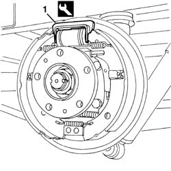
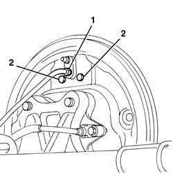
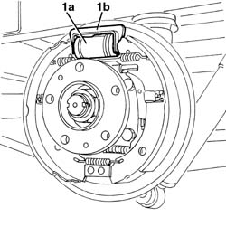
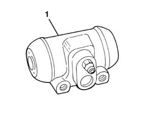

3320B20 REAR BRAKE SHOE CYLINDER (ONE) LEFT OR RIGHT - REPLACE.
- Path
- Procedures > 33 BRAKING SYSTEM > 3320 DRUM BRAKES > 3320B REAR DRUM BRAKES > 3320B20 REAR BRAKE SHOE CYLINDER (ONE) LEFT OR RIGHT - REPLACE.
- Kind
- repair procedure (removal / refitting; the operation number is the code)
- Applies to
- all engines; all production periods
- Interactive page
- https://sloeber94.github.io/elrnDB-fDct/en/#/244001091
Applies to: all engines; all production periods
 Removing
Removing
 Refitting
RefittingOp. 3320B30 LH OR RH REAR BRAKE DRUM (ONE) R R
1. Position the special tool on the shoe control cylinder.
 | Description | Code | Function |
|---|---|---|---|
1 | Retainer | 1.872.257.000 | Drum brake cylinder locking |

Applies to: all engines; all production periods
1. Undo the connector for the brake pipe.
2. Undo the bolts fixing the shoe control cylinder.

Applies to: all engines; all production periods
1. Remove the shoe control cylinder (1a) and, if necessary, separate it from the tool (1b).

Applies to: all engines; all production periods
1. If necessary, check the shoe control cylinder components.
- When overhauling, always replace the seals and the protective boots; if there are faults in the cylinder casing or the pistons, replace the assembly.
- Make sure that the bleed screw is not obstructed.

Applies to: all engines; all production periods
Refitting
Removing- If it has been removed, position the special tool on the shoe control cylinder.
| Description | Code | Function |
|---|---|---|---|
. | Retainer | 1.872.257.000 | Drum brake cylinder locking |
- Place the shoe control cylinder in position and secure it using the bolts.
- Tighten the connector for the brake pipe.
 | Value - daNm | Fastening | Component | Ø |
|---|---|---|---|---|
. | 1.2 -2.2 daNm | Nut | BRAKING SYSTEM PIPE CONNECTORS | M10x1 |
- Remove the tool from the shoe control cylinder.
Op. 3320B30 LH OR RH REAR BRAKE DRUM (ONE) R R
Op. 0010T65 HYDRAULIC BRAKE SYSTEM BLEED AIR
- Check that the brakes are working.